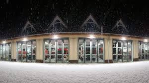
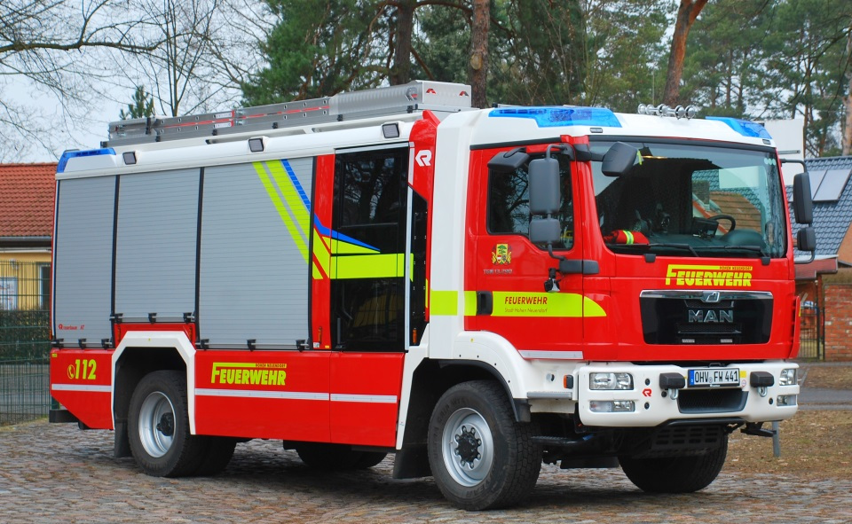
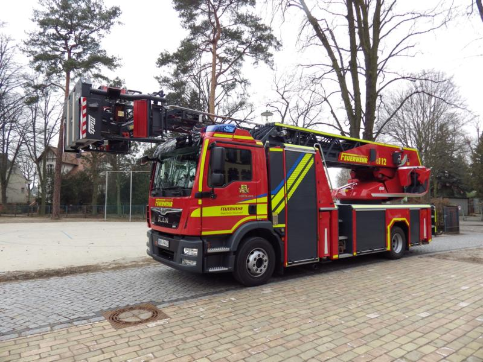
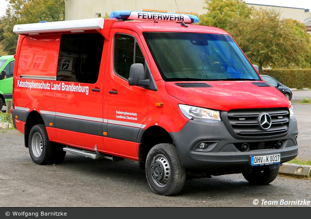

LZ-Hohen Neuendorf
Löschzug 1 Hohen Neuendorf

Der Löschzug Hohen Neuendorf (Löschzug 1) wurde am 04.06.1898 gegründet und ist damit der älteste der drei Löschzüge der Stadt Hohen Neuendorf. Ursprünglich waren alle drei Löschzüge eigenständige Wehren, welche jedoch im Rahmen der Eingemeindung von Bergfelde und Borgsdorf 1993 zur Freiwilligen Feuerwehr der Stadt Hohen Neuendorf zusammengeschlossen wurden.
Unser Löschzug umfasst derzeit insgesamt 99 Kameraden und Kameradinnen, welche genauso vielfältig sind wie unser Ehrenamt. Aufgrund der steigenden Einwohneranzahl sind wir immer auf der Suche nach engagierten und interessierten Menschen, welche uns unterstützen. Dabei können wir jede helfende Hand gebrauchen und bestärken jeden Einzelnen in seinen individuellen Spezialisierungswünschen.
Falls Sie Interesse an einer Tätigkeit in der Freiwilligen Feuerwehr haben, dann melden Sie sich gerne bei uns!
Zugführung:
Frau Nicole Jänicke
Gegründet: 4. Juni 1898
Einsatzabteilung: 45 Kameraden*innen
Jugendabteilung: 21 Kameraden*innen
Kinderfeuerwehr: 15 Kameraden*innen
Alters- und Ehrenabteilung: 18 Kameraden*innen
Fahrzeuge
LF-20 (Florian Oberhavel 4/44-1)DLK 23/ 12 (Florian Oberhavel 4/33-1)
MTF 3 (Florian Oberhavel 4/19-1)
ELW (Florian Oberhavel 4/11-1)
MZF (Florian Oberhavel 4/59-1)
LF 20
Löschgruppenfahrzeug LF 20 der FF Hohen Neuendorf,
Stadt Hohen Neuendorf
Fahrgestell: MAN
Aufbau: Rosenbauer
Baujahr: 2016

DLK 23/ 12
Drehleiter mit Korb (DLK 23/ 12) der FF Hohen Neuendorf,
Stadt Hohen Neuendorf
Fahrgestell: MAN
Aufbau: Rosenbauer
Baujahr: 2016

MTF 3
Mannschaftstransportwagen (MTF 3) der FF Hohen Neuendorf,
Stadt Hohen Neuendorf
Fahrgestell: Ford Transit
Ausbau: Schäfer
Baujahr: 2021

ELW
Einsatzleitwagen (ELW) der FF Hohen Neuendorf,
Stadt Hohen Neuendorf
Hersteller: Mercedes-Benz Sprinter 516 CDI 4x4 ("VS30")
Ausbau: BINZ Ambulance- und Umwelttechnik GmbH
Baujahr: 2019

MZF
Mehrzweckfahrzeug (MZF) der FF Hohen Neuendorf,
Stadt Hohen Neuendorf
Hersteller: VW
Ausbau: BINZ Ambulance- und Umwelttechnik GmbH
Baujahr: 2008